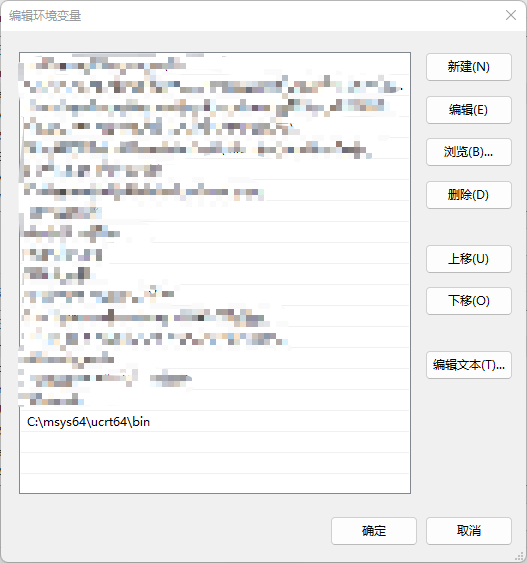
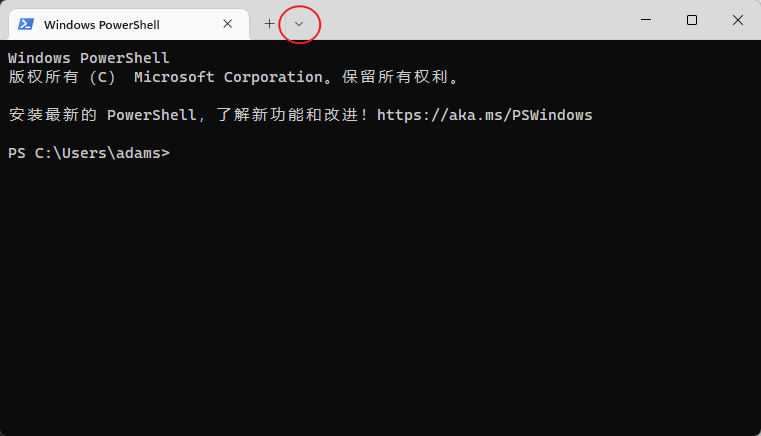
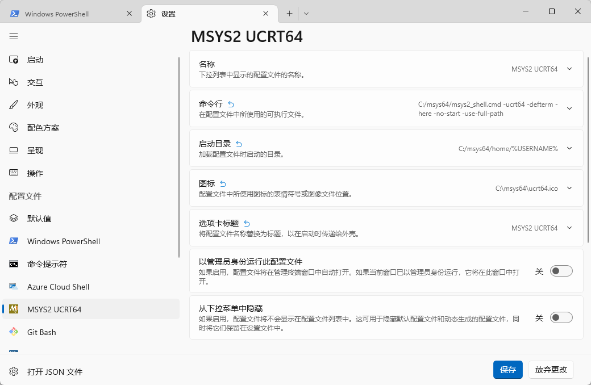
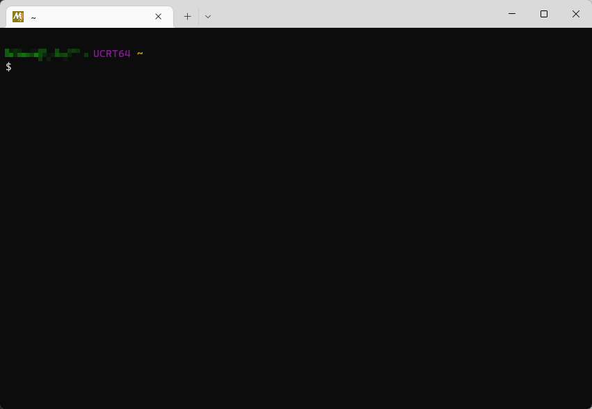

使用MYSY2管理C++工具链（以vscode为例）
在Windows上开发C++必须解决环境配置的问题。要么选择MS体系下的C++开发环境，要么使用诸如Cygwin，MinGW等环境。MSYS2是一个基于Cygwin与Mingw-w64的开发平台。除了直接使用MSYS2提供的终端进行开发，MSYS2还主要用于管理开发工具。
安装MSYS2
参照MSYS2官网首页进行基本的安装配置。
MSYS2提供了多个不同的环境配置。本文使用最新的UCRT64环境。环境的区别见官方文档。
不同于Cygwin，MSYS2需要手动通过pacman包管理器安装自己需要的工具链。
官网首页使用pacman -S mingw-w64-ucrt-x86_64-gcc命令安装ucrt环境下的gcc。要安装其他工具，例如gdb，需要自行手动安装：pacman -S mingw-w64-ucrt-x86_64-gcc。
1 | pacman -S mingw-w64-ucrt-x86_64-gdb |
具体开发环境可以按个人需求进行定制。
使用MSYS2安装的工具
MSYS2的工具可以直接在自带终端中使用，但我们一般需要在自己的编辑器或IDE中使用。此时需要获取安装目录下各类工具的路径。
MSYS2中安装的工具在软件目录下的对应位置。假如MSYS2安装在C:\msys64，那么我们安装的gcc.exe、g++.exe 与 gdb.exe均在C:\msys64\ucrt64的bin目录下。如果希望在IDE中使用MSYS2的工具链，需要自行配置路径。
为了直接在windows终端中调用工具，需要配置环境变量。将C:\msys64\ucrt64\bin加入到环境变量中的PATH下。之后可以在Windows Terminal中直接调用g++等工具。

直接在Windows Terminal中调用g++，可以正常运行。
1 | g++ --version |
1 | g++.exe (Rev6, Built by MSYS2 project) 12.2.0 |
配置编辑器或IDE环境，以vscode为例。vscode配置C++环境比较复杂，一般来说能在vscode中成功配置，在其他编辑器中也没有问题。
具体vscode配置C++环境并不是文章重点，不再赘述。假定已经有了可以正常运行C++的vscode，只需替换环境配置。首先在c_cpp_properties.json中添加编译器路径与头文件路径，使得语言插件可以正常运行。
1 | // ... |
在launch.json中配置调试器路径。
1 | "configurations": [ |
编写Hello world程序，可以正常编译运行。
1 |
|
1 | Hello world! |
自由使用pacman安装工具
pacman是一个包管理器，一开始我们使用pacman安装了开发必要工具，接下来我们同样可以使用pacman安装其他工具。[官方文档]。
例如，我们希望安装makefile，可以先使用pacman -Ss make命令进行搜索：
1 | ucrt64/mingw-w64-ucrt-x86_64-make 4.4-2 (mingw-w64-ucrt-x86_64-toolchain) |
发现需要的软件包后使用pacman -S命令进行安装
1 | pacman -S mingw-w64-ucrt-x86_64-make |
回到bin目录下，搜索make，发现已经安装了mingw32-make.exe，根据个人的使用习惯可以将程序改名为makefile.exe。
现在，在MSYS2终端或Windows上的其他终端上都可以使用makefile了。
1 | makefile -v |
1 | GNU Make 4.4 |
除了-Ss与-S以外，pacman的常用命令还有
1 | # 查看已安装软件/库 |
使用pacman安装诸如grep等工具，非常方便。
使用pacman管理库
以fmt库为例，首先使用pacman搜索fmt库
1 | pacman -Ss fmt |
1 | ucrt64/mingw-w64-ucrt-x86_64-fmt 9.1.0-1 [installed] |
选择安装mingw-w64-ucrt-x86_64-fmt
1 | pacman -S mingw-w64-ucrt-x86_64-fmt |
此时在./ucrt64/include目录与./ucrt64/lib下即可看到fmt对应文件。配置好相关编辑器或IDE的路径，即可调用该库。
要使项目链接第三方库，需配置tasks.json，修改传递给编译器的参数，包括头文件目录，静态链接库目录，以及链接库本身。
1 | "args":[ |
前两者固定，后者可以在lib目录下检阅.a文件名。看到libfmt.a，替换为参数-lfmt即可。
完成配置之后，即可正常使用库，如下所示。
1 |
|
1 | Hello, world! |
通过Windows Terminal启动MSYS2
和Git Bash一样，MSYS2使用MinTTY作为默认终端。为了更方便的操作，更好的视觉效果，我们可以使用Windows Terminal启动MSYS2。
在Windows Terminal的设置中添加新配置文件。

当配置可执行文件时，使用msys2_shell.cmd作为可执行文件。需要加上参数-ucrt64 -defterm -here -no-start -use-full-path，它们分别表示：
- 使用
UCRT64环境 - 启动bash
set CHERE_INVOKING=1- 不通过
start命令来启动（否则会新建窗口） - 继承Windows中的PATH

在下拉框中选中MSYS2 UCRT64即可在终端中打开MSYS2。
